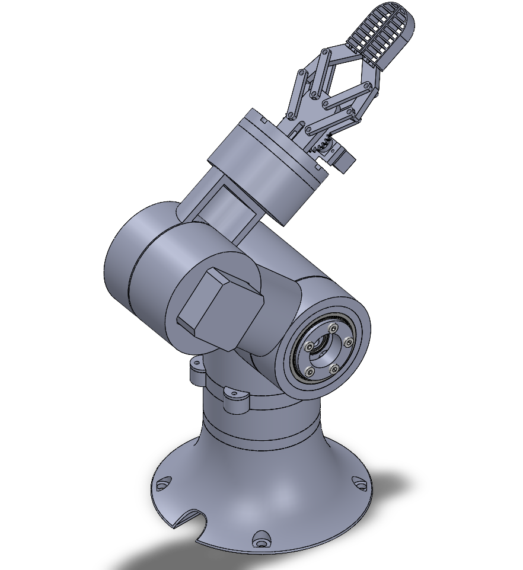
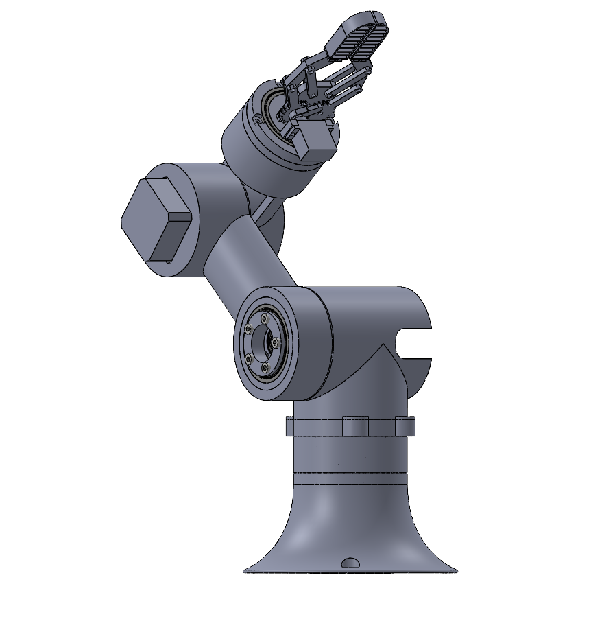
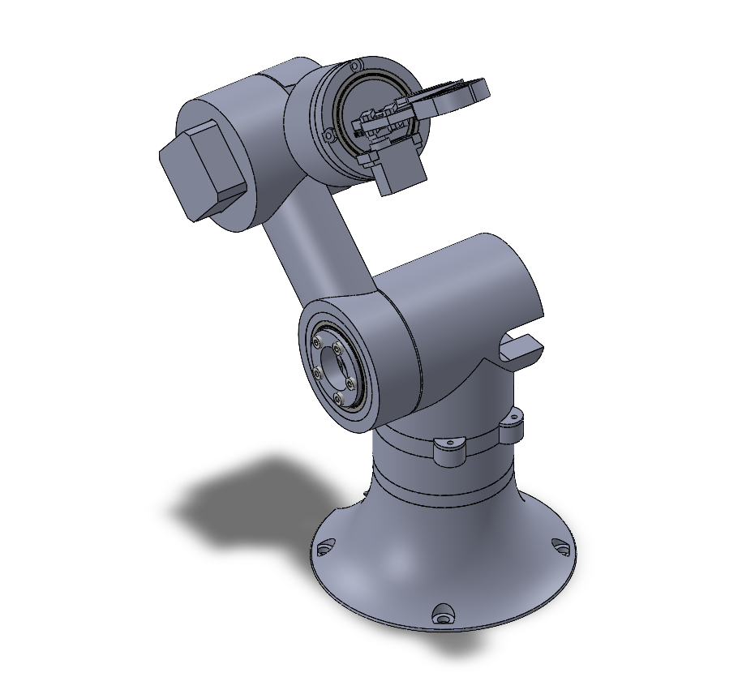
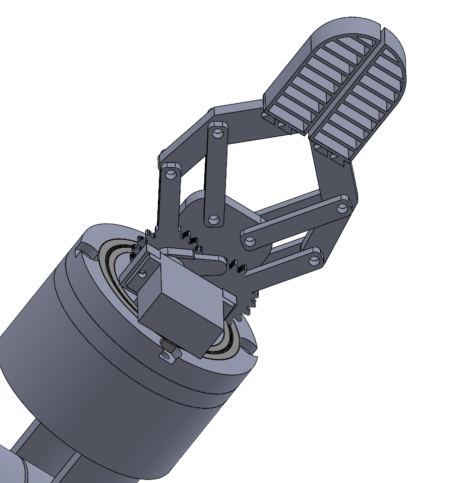

- 270 mmReach
- ~500 gPayload
- ~1 mmRepeatability
- < $160Total cost
Overview
I wanted to build an arm that behaves like a real industrial robot while staying cheap and printable at home. The main design problem was getting enough torque and stiffness out of my NEMA 17 stepper motors without adding too much backlash. I solved it by designing my own 19:1 cycloidal reducers and building each joint as its own actuator.
Tools: SolidWorks, NEMA 17 steppers, GRBL and G-code, C++, FDM 3D printing
Mechanical design
I modeled the full assembly in SolidWorks before printing anything, which let me check joint clearances and range of motion digitally. The hardest part was getting the proper tolerances on the cycloidal reducers; too tight and they bind, too loose and they introduce backlash. I printed and tested multiple versions, tuning the clearances between the cycloidal disc and ring pins until the joints ran smoothly while staying backdrivable.
Cycloidal reducers
I chose to use cycloidal gearboxes for my arm to get a high reduction ratio in a compact space with very little backlash, while maintaining backdrivability. Planetary gearboxes can't easily achieve the same reduction ratio, and strain wave gears are not as accessible for 3D printing. The animation shows the shoulder reducer coming apart: the bolts and retaining ring, the bearings, the eccentric shaft, and the offset lobed cycloidal discs inside their ring-pin housing.
- Modular actuators: The base and shoulder joints are self-contained, bearing-supported modules that bolt together. I weighed each module during the build to keep the mass in check, which was a concern with my low-torque motors.
- Compliant gripper: An SG90 servo drives a geared parallel-linkage gripper. Its flexible ribbed TPU fingers conform to the object for a secure grip.
- Fully 3D-printed structure: All structural parts except the compliant fingers were designed in CAD and printed in PLA, which kept the production cost low.



The build
Everything was printed and assembled at home.


Bill of materials
Everything that went into the arm, grouped by type. The parts total $154.91.
| Part | Qty | Unit price | Cost |
|---|---|---|---|
| Motors | |||
| NEMA 17 stepper, 60 mm | 1 | $19.99 | $19.99 |
| NEMA 17 stepper, 48 mm | 2 | $6.50 | $12.99 |
| NEMA 17 stepper, 23 mm | 1 | $9.89 | $9.89 |
| SG90 micro servo | 1 | $2.00 | $2.00 |
| Electronics | |||
| Arduino Uno | 1 | $16.99 | $16.99 |
| CNC shield | 1 | $4.00 | $4.00 |
| DRV8825 stepper driver | 3 | $2.90 | $8.69 |
| TMC2209 stepper driver | 1 | $5.89 | $5.89 |
| 24 V, 350 W DC power supply | 1 | $28.54 | $28.54 |
| XT30 connector | 1 | $1.80 | $1.80 |
| Dupont jumper wires | 4 | $0.06 | $0.23 |
| Bearings and hardware | |||
| 6808-2RS bearing | 6 | $2.20 | $13.19 |
| 6801ZZ bearing | 6 | $0.86 | $5.15 |
| 608-2RS bearing | 3 | $0.35 | $1.05 |
| Sleeve bearing | 15 | $0.38 | $5.77 |
| Shoulder bolt | 15 | $0.58 | $8.71 |
| M3 bolts and nuts | 32 | $0.007 | $0.24 |
| Materials | |||
| Filament, PLA and TPU (1 kg spool) | 0.7 spool | $13.99 | $9.79 |
| Total | $154.91 | ||
Prices are pre-tax and exclude shipping. Costs count only the parts used in the arm. Many parts come in multi-packs, so unit prices are the pack price divided by pack size.
In action
The arm running a recorded pick-and-place route from the controller.
Controls and software
- Firmware: The arm runs GRBL on an Arduino Uno with a CNC shield, using a mix of DRV8825 and TMC2209 stepper drivers. I modified the firmware so the wrist stepper and gripper servo are controlled by the same command stream as the base, shoulder, and elbow steppers.
- Inverse kinematics: I implemented IK so I can command the arm to a target XYZ position. The solver checks whether the point is reachable before it moves the arm.
- Custom controller: I built a browser-based control app that connects to the arm over USB serial and sends motion commands as G-code.
It displays a live 3D model of the arm, loaded from a URDF file. I intentionally kept the model simple, since its purpose is to show the arm's
position and reach in real time rather than detailed geometry. The app is organized into four tabs:
- Jog: move each joint, set the folded homing position, and open or close the gripper
- Move / IK: go to specific joint angles or solve for an XYZ target
- Routes: save waypoints with gripper actions, then play back a pick-and-place route
- Config: load a URDF model and set speed, acceleration, and gearing for each joint
Programming a route in the controller and playing it back.


What I'd do differently
I'm happy with how the arm turned out, but the electronics were the most frustrating and limiting part of the project. I built around an Arduino Uno and a CNC shield, a setup made for three-axis CNC machines rather than a four-joint arm. Getting a fourth stepper and the gripper servo running meant modifying GRBL myself. It worked, but I should have chosen a different setup from the start. If I built it again, I would change three things:
- Custom driver boards on each motor: I would design a small PCB that screws onto the back of each stepper and carries its own driver. Each joint would then only need a power cable and a data cable, both of which could fit inside the joints instead of running outside the arm. The motors could daisy-chain the data stream, so adding another stepper would mean plugging it into the last one.
- ESP32 instead of Arduino: An ESP32 has more processing power and I/O than the Uno. It would also let me add Wi-Fi control, so the arm wouldn't need to be tethered to my laptop over USB.
- A fifth degree of freedom: With four joints, the gripper can't approach objects from the side. A fifth joint would let it reach things from the side as well as from above.